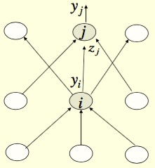

Neural Network III Backpropagation
This is a note for learning Neural Network in Machine Learning based on this course on Coursera.
Learning weights of perceptron
Different to the learning procedure for perceptron in the post before, here is a new way for learning. Instead of showing the weights get closer to a good set of weights, show that the actual output values get closer the target values.
The advantage of this method is that it is the fundamentals towards building a learning algorithm for multiple layers neural network.
linear neuron
This is the batch delta rule for changing weights.
Definition:$$y=\sum_{i}w_i x_i$$
x is input vector, y is output, w is weight vector. The definition of the squared error:$$E=\frac{1}{2}\sum_{n\in{training}}(t_n-y_n)^2$$
t is the target value for each training case. So, we need to derive the value of gradient $\frac{\partial E}{\partial w_i}$, So, $$\frac{\partial{E}}{\partial{w_i}} = \frac{1}{2}\sum_{n\in{training}}\frac{\partial y_n}{\partial w_i}\frac{dE_n}{dy_n} = -\sum_{n\in{training}}x_{i(n)}(t_n-y_n)$$ Then we add a learning rate $\epsilon$ to the small change on w:$$\Delta w_i = -\epsilon\frac{\partial E}{\partial w_i}=\sum_{n\in{training}}\epsilon x_{i(n)}(t_n-y_n)$$
Logistic neuron
Definition:
$$y=\sum_{i}w_i x_i$$$$y=\frac{1}{1+e^{-\beta z}}\Rightarrow \frac{dy}{dz} = y(1-y)$$$$E=\frac{1}{2}\sum_{n\in{training}}(t_n-y_n)^2$$ So,
$$\frac{\partial{E}}{\partial{w_i}} = \sum_n\frac{\partial y_n}{\partial w_i}\frac{\partial E}{\partial y_n} = \sum_n\frac{\partial z_n}{\partial w_i}\frac{dy_n}{dz_n}\frac{\partial E}{\partial y_n} = -\sum_n x_{i(n)}y_n(1-y_n)(t_n-y_n)$$
Backpropagation algorithm
In order to get nonlinear function for the NN and make machine to learn the feature, we need to add hidden layer to our NN framework. Thus we need an algorithm to adjust all hidden layers’ weights efficiently.
The idea behind backpropagation is that though we don t know what the hidden units ought to do, but we can compute how fast the error changes as we change a hidden activity. Here is the procedure:

The j represent the current layer, the i represent the layer before current layer. The definition of error function:
$$E=\frac{1}{2}\sum_{j\in{output}}(t_j-y_j)^2$$thus,
$$\frac{\partial E}{\partial w_{ij}} = \frac{\partial z_j}{\partial w_{ij}}\frac{\partial E}{\partial z_j} = y_i \frac{\partial{E}}{\partial z_j} = y_i \frac{\partial y_j}{\partial z_j}\frac{\partial E}{\partial y_j} = y_i y_j(1-y_j)\frac{\partial E}{\partial y_j} = y_i y_j(1-y_j)[-(t_j-y_j)] $$
For computing further layers, we need to derive $\frac{\partial E}{\partial y_i}$, so,
$$\frac{\partial E}{\partial y_i} = \sum_j \frac{dz_j}{dy_i}\frac{\partial E}{\partial z_j} = \sum_j w_{ij}\frac{\partial E}{\partial z_j} = \sum_j w_{ij}y_j(1-y_j)[-(t_j-y_j)]$$
Now, with $\frac{\partial E}{\partial y_i}$, we could do the iterate things back to layers close to input layers.
Issues in using Backpropagation
These two issue will be discussed in the later lectures.
Optimization issues
How do we use the error derivatives on individual cases to discover a good set of weights?
- How often to update the weights
- Online: after each training case.
- Full batch: after a full sweep through the training data.
- Mini-batch: after a small sample of training cases.
- How much to update
- Using fixed learning rate?
Generalization issues
How do we ensure that the learned weights work well for cases we did not see during training?
- Overfitting
- Because a NN is flexible, so we need to prevent it to be overfitted.
- A large number of different methods to tackle this problem.
Supplement
The backpropagation algorithm is improved by Hinton and other workers in 1985. See this paper for more details:
LEARNING INTERNAL REPRESENTATIONS BY ERROR PROPAGATION, David E. Ruineihart, Geoffrey E. Hinton, and Ronald J. Williams, September 1985, ICS Report 8506